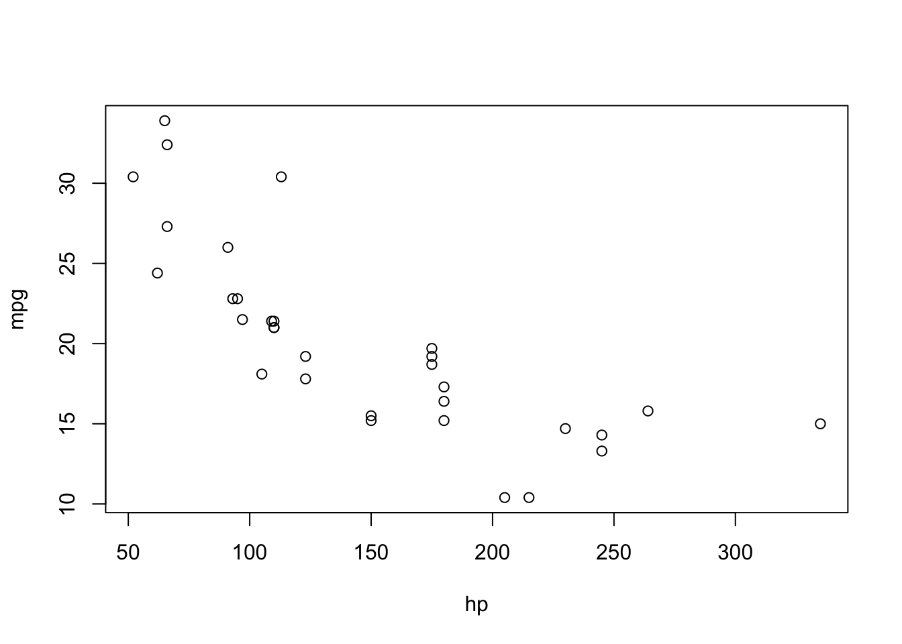
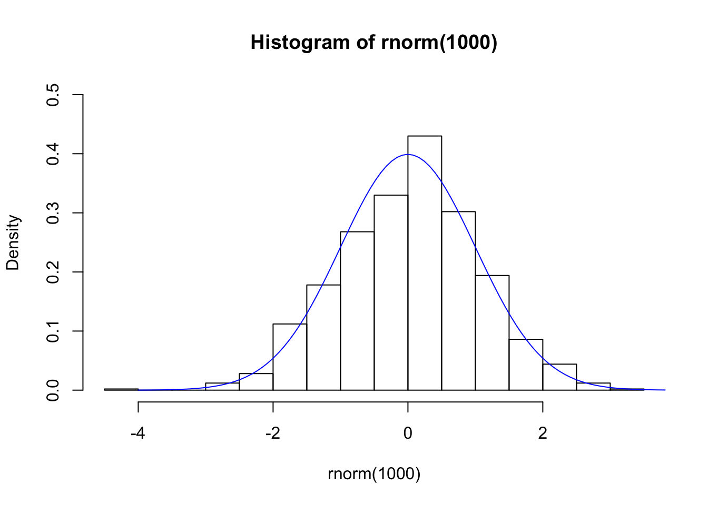
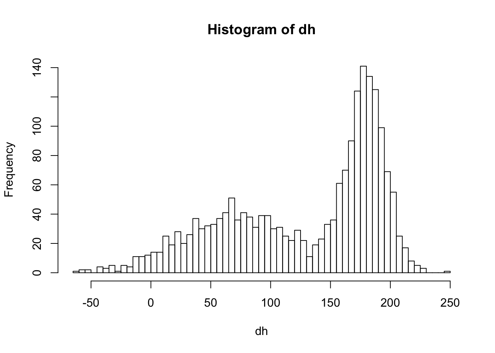
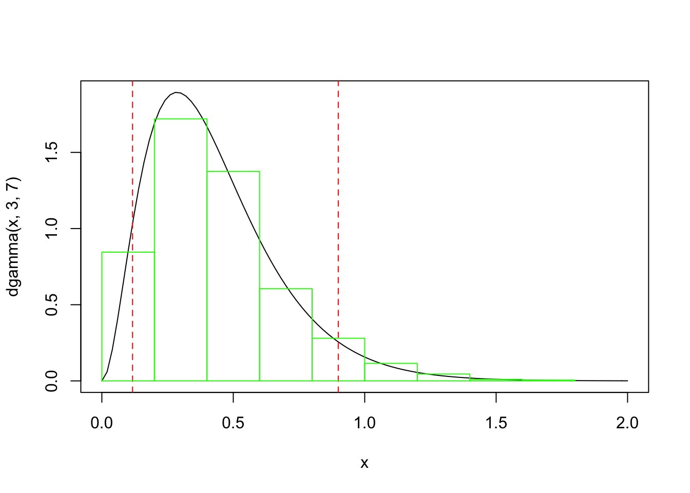

Section 6 Distributionns
6.1 Function curve()
curve(sin(x),0,2*pi)
curve(cos(x),from=0,to=2*pi,add=T,col="red",lty=2)
6.2 Normal distribution
dnorm(-1.96, mean=0, sd=1)## [1] 0.05844094dnorm(-1.96, mean=10, sd=7)## [1] 0.01324074curve(dnorm(x),-3,3)
curve(dnorm(x, 10, 3),0,20)
curve(pnorm(x, 10, 3),0,20)
curve(dnorm(x),-4,4)
abline(v=qnorm(0.025), col="red", lty=2)
abline(v=qnorm(0.025, lower.tail = F), col="red", lty=2)
abline(v=qnorm(0.005), col="blue", lty=2)
abline(v=qnorm(0.005, lower.tail = F), col="blue", lty=2)curve(qnorm(x))rnorm(5)## [1] -0.78954509 -1.40708790 0.07882491 1.19369772 -0.93107016hist(rnorm(1000),freq = F,ylim=c(0,0.5))
curve(dnorm(x),-4,4,add=T,col="blue")
dh <- c(rnorm(1000,75,50),rnorm(1000,180,15))
hist(dh,100,200)
6.3 Gamma
curve(dgamma(x,2,6))
curve(dgamma(x,3,7),col="red",add=T)
legend("topright",
legend=c("g(2,6)","g(3,7)"),
lty=1,
col=c("black","red"))curve(dgamma(x,3,7),0,2)
abline(v=qgamma(0.05,3,7),col="red",lty=2)
abline(v=qgamma(0.05,3,7,lower.tail = F),col="red",lty=2)
hist(rgamma(1000,3,7),freq = F, add=T, border="green")
6.4 Beta
curve(dbeta(x,2,6))
curve(dbeta(x,3,7),col="red",add=T)
legend("topright",
legend=c("b(2,6)","b(3,7)"),
lty=1,
col=c("black","red"))curve(dbeta(x,3,7))
abline(v=qbeta(0.05,3,7),col="red",lty=2)
abline(v=qbeta(0.05,3,7,lower.tail = F),col="red",lty=2)
hist(rbeta(1000,3,7),freq = F, add=T, border="green")